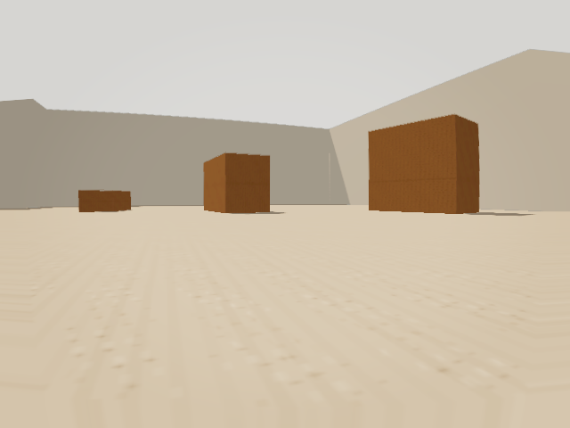

decision-combined-v0
vehicle=chase-sim-chaser frame_id=chase_frame_3073455
Observation / camera

Retained evidence
status=ready health=healthy
records=7
- {'record_id': 'signal:1:14:floor-plane-v0:13:floor_visible', 'kind': 'signal', 'confidence': 1.0, 'frame_id': 'chase_frame_3073455', 'observation_id': 'chase_frame_3073455'}
- {'record_id': 'signal:1:14:floor-plane-v0:24:floor_boundary_available', 'kind': 'signal', 'confidence': 0.889845, 'frame_id': 'chase_frame_3073455', 'observation_id': 'chase_frame_3073455'}
- {'record_id': 'signal:1:20:frame-observation-v0:22:front_camera_available', 'kind': 'signal', 'confidence': 1.0, 'frame_id': 'chase_frame_3073455', 'observation_id': 'chase_frame_3073455'}
- {'record_id': 'thing:1:14:floor-plane-v0:17:traversable_floor', 'kind': 'surface', 'confidence': 1.0, 'frame_id': 'chase_frame_3073455', 'observation_id': 'chase_frame_3073455'}
- {'record_id': 'thing:1:14:floor-plane-v0:18:floor_boundary_000', 'kind': 'floor_boundary', 'confidence': 1.0, 'frame_id': 'chase_frame_3073455', 'observation_id': 'chase_frame_3073455'}
- {'record_id': 'thing:1:14:floor-plane-v0:18:floor_boundary_001', 'kind': 'floor_boundary', 'confidence': 0.77969, 'frame_id': 'chase_frame_3073455', 'observation_id': 'chase_frame_3073455'}
- {'record_id': 'thing:1:20:frame-observation-v0:18:front_camera_frame', 'kind': 'sensor_frame', 'confidence': 1.0, 'frame_id': 'chase_frame_3073455', 'observation_id': 'chase_frame_3073455'}
Proposals
- plugin=avoid_recent_obstruction lifecycle=fresh freshness=fresh conf=1.0 reason=steer_away_left_obstruction command={'steering': 0.35, 'throttle': 0.0} source_refs=[{"frame_id": "chase_frame_3073455", "id": "thing:1:14:floor-plane-v0:18:floor_boundary_000", "kind": "memory_record", "note": "primary_obstruction", "observation_id": "chase_frame_3073455", "plugin_id": "floor-plane-v0"}]
Selection
status=selected
selected_proposal_id=avoid_recent_obstruction:chase_frame_3073455
contribution_plugins=avoid_recent_obstruction
source_refs
[
{
"frame_id": "chase_frame_3073455",
"id": "thing:1:14:floor-plane-v0:18:floor_boundary_000",
"kind": "memory_record",
"note": "primary_obstruction",
"observation_id": "chase_frame_3073455",
"plugin_id": "floor-plane-v0"
}
]
Authority
proposed={'schema': 'proposed_vehicle_command_v0', 'steering': 0.35, 'throttle': 0.0, 'gear': 'hold', 'normalized': True}
authorized_output={'steering': 0.0, 'throttle': 0.0, 'confidence': 1.0, 'reason': 'shadow-only-idle'}
proposed_applied=false
host_application={'status': 'unavailable', 'value': None, 'reason': 'host_did_not_report_application', 'updated_at_ms': 0}
Non-claims
no object identity; shadow-only; not navigation certification.